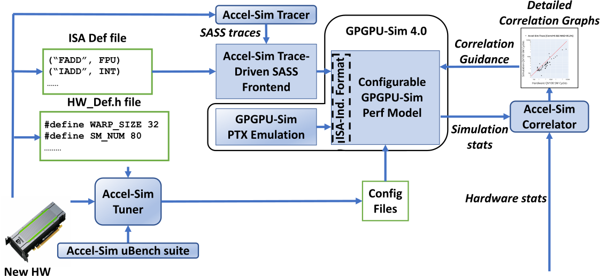
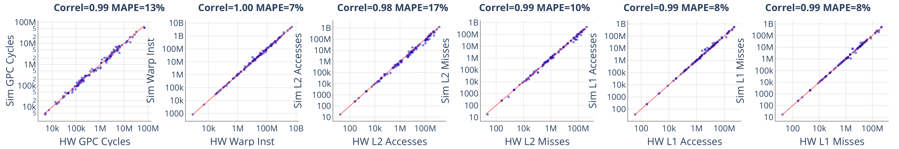

View on Github Get Accel-Sim 2.0 Accel-Sim 2.0 Paper
08/2026: Accel-Sim 2.0 has officially been released!
Accel-Sim is a simulation framework for simulating and
validating programmable accelerators like GPUs. Version 2.0 brings
NVIDIA Hopper (H100 / H200) modeling to the trace-driven simulator:
the Tensor Memory Accelerator (TMA), asynchronous Warp Group MMA (WGMMA),
mbarrier producer/consumer synchronization, threadblock clusters, and a
chiplet / uGPU partitioned memory subsystem. It also ships a rebuilt tracer that
can trace vLLM inference and PyTorch training end to end, and
GPUVision for cycle-level hardware correlation.
See the Accel-Sim 2.0 paper,
the release notes,
and the original ISCA 2020 paper
(slides here).
AccelWattch is a power modeling framework that is extensively validated for modern GPUs and enables reliable design space exploration. Please see our recent MICRO 2021 paper, download slides from here, and look at AccelWattch website here.
Subscribe to our Google
group to keep up-to-date with the recent news on Accel-Sim and AccelWattch.
For questions, contributions and support, please use
GitHub
Discussions and issues.
How to cite Accel-Sim. Citations are
cumulative. If you use GPGPU-Sim 4.x, trace-driven simulation, or any of
the Accel-Sim components in your research, please cite all three base papers:
If you use any component of the AccelWattch power modeling framework, please cite the following in addition to the base papers above:
Ready-to-use metadata ships with the repo: CITATION.bib (every entry above) and CITATION.cff (machine-readable).
Extensively Validated
Using NVIDIA's machine ISA (SASS), integrated into
GPGPU-Sim 4.x's performance model, Accel-Sim is highly
correlated to contemporary NVIDIA architectures. Against real H100
silicon, Accel-Sim 2.0 reaches a 99% Pearson correlation and
13.4% mean absolute cycle error over 34,000+ kernel instances
from 22 benchmark suites.
Simulate SASS for any CUDA App
No functional implementation required. Trace any CUDA binary, including those using cuBLAS, CUTLASS, cuDNN, NCCL, FlashAttention-3 and PyTorch. Modern LLM workloads can be traced directly out of vLLM or Hugging Face, one model layer at a time. If it runs in silicon: you can simulate it with minimal effort in Accel-Sim.
Highly Extensible
Building an extensible simulation for rapidly-evolving GPU architecture is challenging. Accel-Sim is built to ensure it is up-to-date with industrial designs and reduces the simulation accuracy gap between academia and industry on an ongoing basis.
Accel-Sim Overview
Accel-Sim consists of four main components:- Accel-Sim Tracer: An NVBit tool for generating SASS traces from CUDA applications. It also hooks live PyTorch processes, so individual layers of an LLM running under vLLM or Hugging Face can be traced selectively.
- Accel-Sim SASS Frontend: A simulator frontend that consumes SASS traces and feeds them into a performance model. The intial release of Accel-Sim coincides with the release of GPGPU-Sim 4.0, which acts as the detailed performance model.
- Accel-Sim Correlator: A tool that matches, plots and correlates statistics from the performance model with real hardware statistics generated by profiling tools. As of 2.0, GPUVision extends this to cycle-level correlation using CUPTI PM sampling.
- Accel-Sim Tuner: An automated tuner that automates configuration file generation from a detailed microbenchmark suite.

What's New in Accel-Sim 2.0
Accel-Sim 2.0 models the asynchronous, warp-specialized, persistent execution style of modern AI kernels. Everything below is enabled automatically by the H100-SASS / H200-SASS configs — you just trace and run. The release notes carry the complete changelog and a baseline-vs-2.0 feature table.- Hopper (H100 / H200) architecture modeling: TMA bulk tensor movement with CGA multicast, asynchronous WGMMA with variable MMA latency, mbarrier producer/consumer synchronization with async-proxy fences and dynamic try_wait modeling, and threadblock clusters with distributed shared memory.
- Chiplet / uGPU memory subsystem: HBM3 / HBM3e timing, the L2 Request Coalescer (LRC), IPOLY+MODULO L2 hashing, chiplet cache policies and a latency-modeled chiplet interconnect.
- LLM tracing: a PyTorch hook toggles NVBit instrumentation around the forward pass of a named layer, so a transformer block can be traced out of a live vLLM or Hugging Face process and extrapolated end to end.
- GPUVision: CUPTI PM-sampling collects hardware counters as a cycle-level time series rather than a per-kernel aggregate, enabling cycle-level correlation against real silicon.
- Rebuilt tracer: NVBit v1.8, register-value tracing for tensor descriptors and mbarrier operands, spinloop handling, and a compressed per-warp zstd .tracez format with page-based loading that bounds simulator memory to roughly 4 GB regardless of kernel size.
- Statistics and speed: 11,072 hardware counters (up from 54), and roughly 2.2× faster simulation than Accel-Sim 1.x.
Correlation Results
Accel-Sim 2.0 was validated against real NVIDIA H100 silicon across more than 34,000 kernel instances drawn from 22 benchmark suites, including modern LLM inference and training workloads.
Simulated vs. real H100 across 34,000+ kernels — GPC cycles, warp instructions, and L1/L2 accesses & misses. Each panel shows the Pearson correlation and mean absolute percentage error (MAPE) for that metric.
Accel-Sim Manual
- Introduction: The Accel-Sim 2.0 paper [paper], and the Accel-Sim ISCA 2020 paper [paper, slides, video]
- Beginner guide and how to use: Accel-Sim beginner manual
- Release notes and upgrade guide: Accel-Sim 2.0 release notes
- Accel-Sim per-component manuals:
- Nvbit tracer
- Tracing LLMs with vLLM / PyTorch
- Collecting HW stats
- GPUVision: cycle-level CUPTI profiling
- Collecting simulation stats
- Correlator
- Tuner
- Accel-Sim's Trace-driven front-end
- Performance model manual:
- Original GPGPU-Sim 3.x manual [manual, slides, tutorial videos]
- GPGPU-Sim 4.x changes
- Power model manual:
Accel-Sim Roadmap
Delivered in 2.0:- Hopper (H100 / H200) architecture modeling and traces
- Ampere architecture modeling and traces
- LLM inference and training traces (vLLM, PyTorch, FlashAttention-3, CUTLASS, DLRM)
- Chiplet / uGPU partitioned memory subsystem
- Cycle-level hardware correlation (GPUVision)
- Blackwell (B200 / RTX 5090) modeling and traces — experimental, incoming shortly
- Multi-GPU / NVLink simulation — incoming shortly